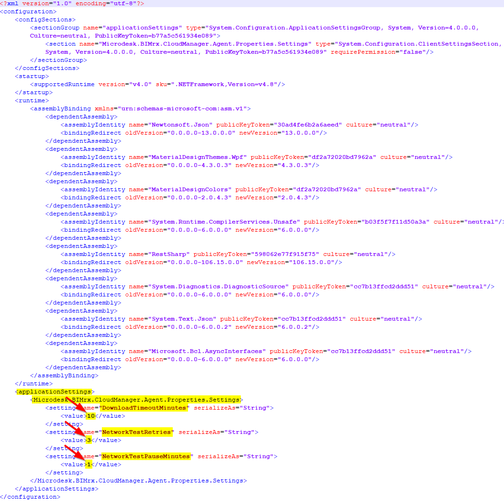

Agent Configuration
When Naviate Cloud Manager executes a scheduled Job, it incorporates several parameters that may be modified by the System Administrator. These configurable parameters are intended to accommodate different requirements and capabilities that potentially could vary according to the size and load of the network server on which the job is running.
Configurable Parameters
The following settings are available for the System Administrator to modify as required.
Download Timeout
The DownloadTimeoutMinutes setting controls the maximum time allowed to download a file from BIM 360®. Regardless of the underlying cause— heavy traffic on BIM 360®, reduced network throughput, unusually large size of the file being downloaded— once this number of minutes has been reached and the file is not yet successfully downloaded, the operation will stop. Once it stops, the app writes a message to the log file stating that the file is being skipped; the name of the skipped file; and why the download operation was halted. Then the download operation continues, going on to the next file.
The default timeout is 10 minutes. To increase this amount, modify the setting to the desired value. This must be stated as minutes--30, 50, 80, 110, 170, 500, etc. Please note decimal values are not allowed. See below under Modifying the Settings for more information.
Network Test Retries
Before executing any scheduled Job, the Naviate Cloud Manager job execution Agent tests the network connection to verify it is available to perform all necessary operations. If the test fails, it will retry a certain numbers of times to make absolutely certain there is no network available before canceling the scheduled job execution and notifying the user. By default, the system is set to try the test 3 times. This number can be changed as required by modifying the NetworkTestRetries to the desired value.
Please Note — Prior to Naviate Cloud Manager Version 2.10.3 this setting is named Retries.
Network Test Pause
As stated above, before executing any scheduled Job, the Naviate Cloud Manager job execution Agent tests the network connection to verify it is available to perform all necessary operations. If the test fails, it will wait for a specific period of time before trying again to establish the connection. Once this period of time expires, it will again attempt to verify the connection, until the specified number of retries has been reached. By default, the system is set to pause between each retry attempt for 1 minute. This number can be changed as required by modifying the NetworkTestPauseMinutes to the desired value.
Please Note — Prior to Naviate Cloud Manager Version 2.10.3 this setting is named NetworkPause.
Modifying the Settings
The settings described above are stored in a file named C:\Program Files\Microdesk BIMrx Cloud Manager\CloudManagerAgent.exe.config. This is a standard Microsoft Windows text file that can be modified using any text editor. After performing modifications, it must be saved in the same standard text format. This is not unusual and is standard for many--if not most--MS Windows applications.
Once the file is open, go to the bottom section to find the settings to be modified. Be careful to not change any of the other settings in this file. Changing these will likely cause the job execution Agent application to not run.

To modify any of the three supported configuration settings, locate them at the bottom of the file under <Microdesk.BIMrx.CloudManager.Agent.Properties.Settings>. To make a change to the desired setting edit the value as follows from:
<setting name="DownloadTimeoutMinutes> serializeAs="String>
<value>10</value>
</setting>
to the desired setting:
<setting name="DownloadTimeoutMinutes> serializeAs="String>
<value>40</value>
</setting>
Take care that the only change made is to the value that appears between the "<" and the ">". This must be a number (be careful not to confuse the letter "O" with the number "0") and cannot contain any decimal places or other characters. For example, one and one-half hours must be expressed as 90, which are the total minutes. There can be no spaces either before the number and the ">" or after the number and the "<".
The same rules described above for the example DownloadTimeoutMinutes also apply to the NetworkTestRetries and NetworkTestPauseMinutes.
Please Note — Depending on your Text Editor, the indentation of the text elements may vary. This doesn't matter and should be ignored, as long as the only changes made are as described above and the file is saved in the standard MS Windows Text format.